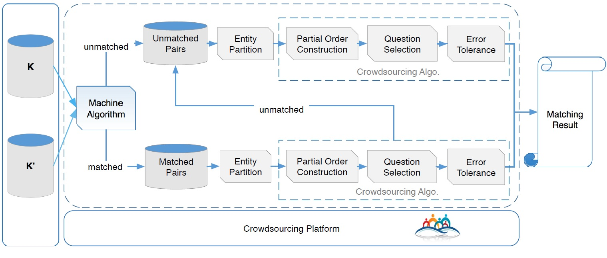

HIKE框架是《Hike: A Hybrid Human-Machine Method for Entity Alignment in Large-Scale Knowledge Bases》一文中提出的人机协作实体对齐框架，在召回率方面较其他算法更有优势。
本文是由阅读该论文的笔记整理而来（大四狗，写论文，后面会持续补充）
HIKE介绍
根据论文介绍，HIKE框架的工作流程图如下图

根据工作流程图可以看出HIKE框架主要分为了实体划分、偏序集建立、问题选择、错误容忍四个步骤。
实体划分
划分原因
真实的知识库拥有几千万实体，直接使用枚举的办法进行实体对齐将会消耗巨大。许多自动实体对齐算法都利用基于实体划分的方法来缩小匹配规模。
划分原理
一般而言，实体对齐算法使用基于类层次结构的划分方法，而在HIKE中，则使用基于谓语的划分方法。直觉上，相似的实体具有相似的谓语，而且相似的谓语也暗示着对应的实体也是相似的。因此通过划分谓语到不同集合中，就可以将相似的实体换分到同一集合中。
划分步骤
基于谓语的实体划分可以分为以下四步：
第一步：知识库K中谓语pi和知识库K’中谓语p’j的相似度计算公式如下：
$$SIM(p_{i},p_{j}’)=\frac{|T(p_{i})\cap T{}’(p_{j}’)|}{|T(p_{i})\cup T{}’(p_{j}’)|}$$
通过使用以上公式，可匹配出两个知识库之间的最相似谓语对。为了进一步扩大谓语对的划分，从而扩大划分出的实体集合，需要划分谓语对集合。
第二步：谓语对的相似度公式如下所示：
$$\rho(pp^{i},pp^{j})=\frac{cos(S(pp^{i}),S(pp^{j}))+cos(S{}’(pp^{i}),S{}’(pp^{j}))}{2}$$
通过公式2计算出每对谓语对相似度并存放到相似度矩阵W中。
第三步：创建队列Q，每个节点保存一个谓语对的集合。
第四步：使用层次凝聚聚类（HAC）算法，给定阈值δ，每轮迭代将相似度高于阈值δ的几个谓语对划分到同一谓语对集合中并更新阈值δ（减少0.1）。当Q不发生改变或者阈值δ低于指定的τ值时，结束迭代，将最终在同一集合中的谓语对相关连的实体划分到同一集合中，由此完成实体划分。
偏序建立
建立偏序原因
在实体划分步骤，HIKE框架根据谓语对集合划分相似的实体到统一集合中。经过对同一实体集合中两个知识库中实体自由组合，我们可以获得实体对集合。
问题选择步骤中，将使用众包的方式获取实体对中两实体是否匹配，为了使用最少的成推测出最多的实体对，我们可以根据实体对的相似度建立偏序，若一实体对确认匹配，则相似度高于该实体对的实体对均为匹配实体对。
建立偏序方法
在获得实体对集合之后，使用基于向量空间的算法获取每个实体对在某一谓语上的相似度。而实体对的整体相似度则为实体对在每个谓语上的相似度的加权和，如下公式所示，sij是实体对pij在谓语ppk上的相似度，wk是谓语ppk的权重。
$$s_{ij}=\sum_{k=1}^{m}\omega_{k}\cdot s_{ij}^{k}$$
直觉上，宾语的对于主语的决定性越强，它们之间的谓语权重越大。即与某个谓语相关的平均每个宾语对应主语数量越少则说明宾语更能提高主语辨识度，该谓语重要度越高，例如（人，名字，名字），（人，爱好，事物），如平均每个名字对应的人的数量比平均每个事物对应的人的数量要少，则名字更有利于提升人的辨识度，因此名字这个谓语更有利于提升人的辨识度。由此我们定义下面的公式。
$$qf(p_{i})=\frac{|{s|\exists o:(s,p_{i},o)\in K}|}{|\left \langle s,o\right \rangle(s,p_{i},o)\in K|}$$
因此每个谓语的权重可以通过如下公式进行计算。
$$\omega_{k}=\frac{qf^{-1}(p_{k})}{\sum_{t=1}^{m}qf^{-1}(p_{t}) }$$
计算出实体对的相似度后，进一步使用倒排索引和前缀过滤算法进一步缩小实体匹配规模。
问题选择
问题选择是在预算B内选出参考价值最大的问题集合
预算B：问题数量最多为B
建立参考模型
问题pij参考价值
参考偏序序列，HIKE框架定义：
pre(pij)表示在偏序序列中在pij前面的实体对的集合
suc(pij)表示在偏序序列中在pij后面的实体对的集合。
由上文推断可知：若pij为匹配实体对，pre(pij)中均为匹配实体对；若pij为非匹配实体对，suc(pij)中均为非匹配实体对
pre(pij)中均为匹配实体对的概率为sij。
suc(pij)中均为非匹配实体对的概率为1-sij。
据此，pij的参考价值可用pij可推断出实体对的数量的期望值E(pij)表示，通过下面公式计算。
$$E(p_{ij})=s_{ij}\cdot |pre(p_{ij})|+(1-s_{ij})\cdot |suc(p_{ij})|$$
问题集合Q参考价值
给定问题集合Q，为了使在指定的大小内，可以推断最多实体对集合，需要最大化问题集合Q的参考价值。
由于Q中每个问题推理的实体对有重叠部分，不能简单地将问题pij参考价值和作为Q的参考价值。
我们可以计算p’ij在选出的问题集合Q的基础上被推理出的概率，可以分为两种情况：
情况1：p’ij被Q推断出为匹配实体对。即Q中至少有一个问题推断出p’ij为匹配实体对。定义Q中suc(p’ij)为Qs，定义Qs可以推断p’ij为匹配实体对的概率为E(p’ij|Qs)，其计算公式如下所示。
$$E(p_{ij}’|Q^{p})=1-\prod_{p_{ij}\in Q^{p}} (1-s_{ij})$$
情况2：p’ij被Q推断出为非匹配实体对。即Q中至少有一个问题推断出p’ij为匹配实体对。定义Q中pre(p’ij)为Qp，定义Qp可以推断p’ij为匹配实体对的概率为E(p’ij|Qp)，其计算公式如下所示。
$$E(p_{ij}’|Q^{w})=1-\prod_{p_{ij}\in Q^{w}} (s_{ij})$$
根据以上两种情况，问题集合Q可以推断出实体对结果的概率可以通过公式9计算。
$$E(p_{ij}’|Q)=E(p_{ij}’|Q^{p})+E(p_{ij}’|Q^{w})$$
最终通过公式10计算问题集合Q的参考价值。
$$E(Q)=\sum_{p_{ij}’}E(p_{ij}’|Q)$$
使用贪婪算法选择问题
单问题选择算法
单问题选择算法采用向众包多轮提问，迭代处理的方式获得推理结果。
每次提问时都选择偏序集中参考价值最高的实体对向众包提问。根据提问结果，从偏序集合中移除并保存可以推测出结果的实体对。重新计算剩下的实体对的算参考价值，再次向众包提问，并重复这一过程直至提问次数达到预算或所有实体对推测完成。
单问题选择算法较为简单但却有很大时延。
多问题选择算法
基于聚合参考价值E(Q)的定义，多问题选择算法旨在一次性选出问题集合Q。
不难证明，E(Q)的计算函数具有单调性和子模型，这是多问题选择算法的理论基础。
多问题选择算法分为以下几个步骤：
步骤1：计算偏序集P中所有实体对参考期望值E()，初始化变量δ。
步骤2：进行B次循环（B为预算最大问题数量）以选取B个问题。
步骤3：选取问题的每次循环中，使用内层循环遍历偏序序列Que。
步骤4：在内层每次循环中，环计算问题集合Q加上遍历获取的实体对后参考价值的增量△E(Q)，若△E(Q)大于δ则将△E(Q)赋值给δ，即δ保存最大增量，使用emax保存产生最大增量时添加的实体对。当实体对的参考期望值小于等于δ，由参考模型建立步骤可知，Q与合并后的集合参考值增量小于等于也就小于等于δ，因此此时δ为偏序列Que中实体对可使E(Q)增加的最大增量，emax为E(Q)增加最大增量时选取的实体对。
步骤5：将emax加入到问题集合Q中并从偏序序列Que中删除emax。
步骤6：开始下一轮问题选择。
经过以上步骤，可以获得具有最大参考价值的问题集合Q。在该算法中，δ变量的使用使得循环在Q参考值增量无法获取更大值时退出，有效降低算法复杂度。
错误容忍
为避免众包平台员工产生错误或者降低错误影响，需要进行容错处理。
员工质量控制
质量控制最常用的方法是多数票方法：将问题分发给多个员工，并采取大多数的答案。
但是每个员工的正确率并不相同，HIKE框架为了提高众包答案准确度，采取了加权大多数票策略。
众包平台提供的员工准确率为权值，HIKE框架首先排除正确率低于某个阈值（比如低于0.4）的员工，将问题分配给其他员工，并获取员工的答案计算加权和（规定回答“是”数值为1，回答“否”数值为-1），加权和为正表示实体对匹配，若为负则不匹配。
错误影响降低
为了降低错误产生后造成的影响，HIKE定义了不确定性查询。如果一个查询qi符合以下三种情况，则为一个不确定性查询。
qi的答案的加权和低于一个特定的数字（例如0.4）；
错误答案造成的损失很大（例如实体对相似度<0.4但>0）；
知识库的实体具有一对多的关系，两个实体对的相似度很接近；
在HIKE框架中，使用启发性方法解决不确定性查询问题。当遇到不确定查询qi时，该方法将会使用两个额外的问题来解决问题。一个是的前驱qa，一个是的后继qd，根据回答的答案分为以下几种情况处理：
（1）qi回答为“是”，qa和qd回答均为“是”，采取的答案；
（2）qi回答为“是”，qa答案为“是”而回答均为“否”，采取的答案；
（3）qi回答为“是”，qa和qd回答均为“否”，采取的答案；
（4）qi回答为“是”，qa答案为“否”而回答均为“是”，交由特殊人员处理；
（5）qi回答为“否”，处理方式和前四种情况相同；
HIKE实现
请参看我的github项目Entity-alignment-system